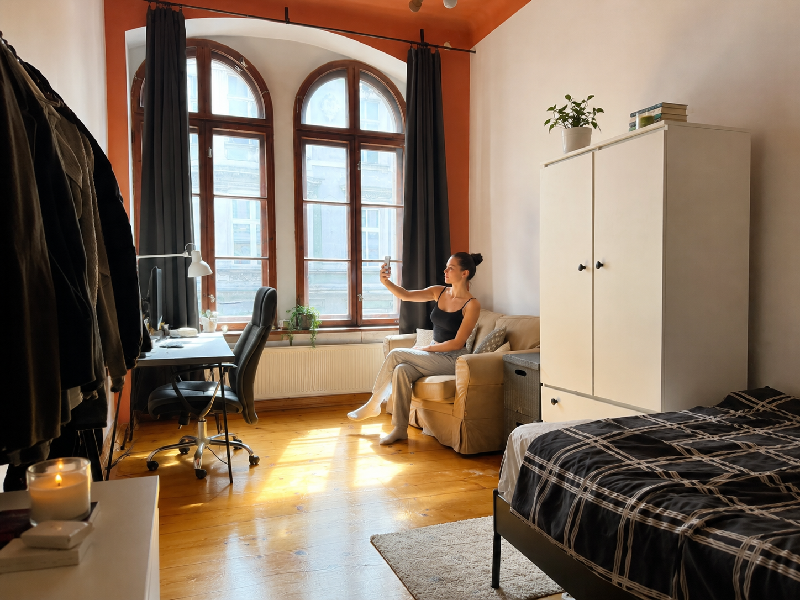
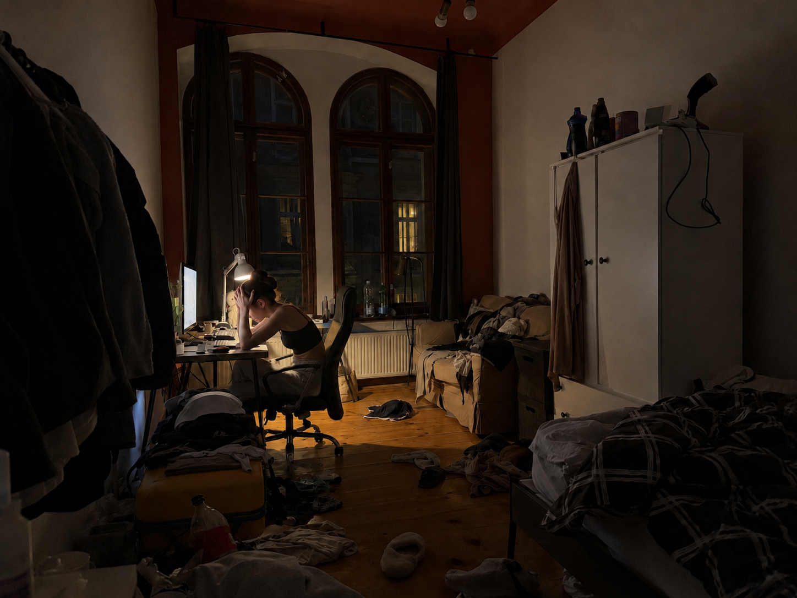
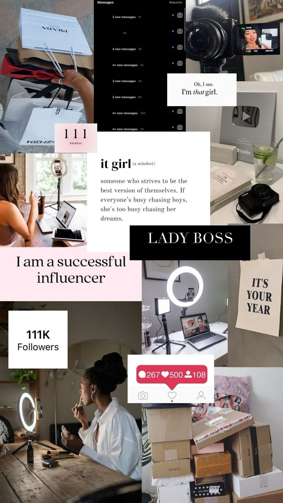
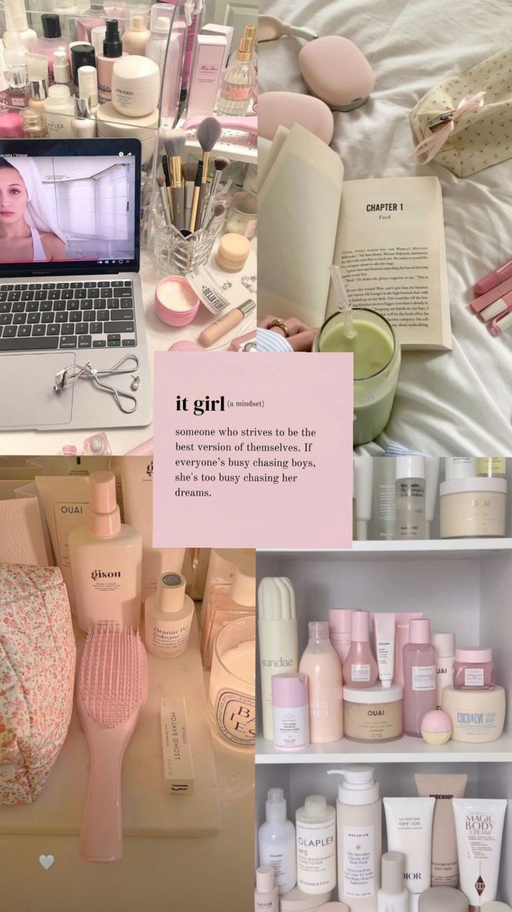
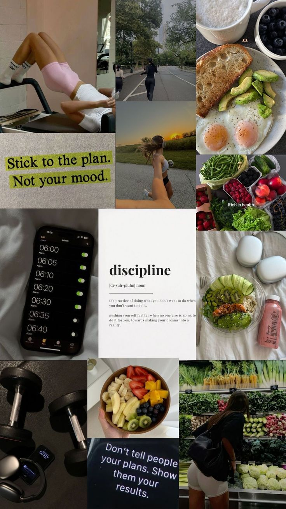
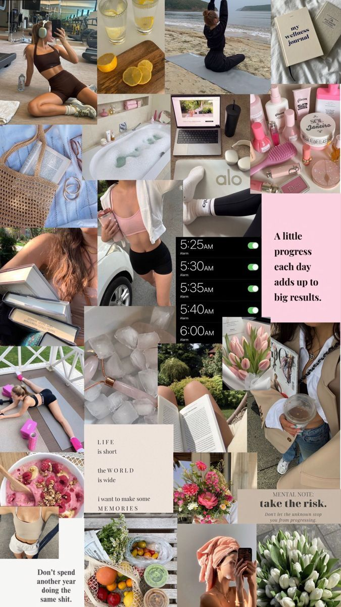
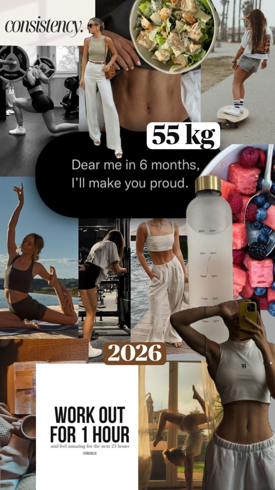
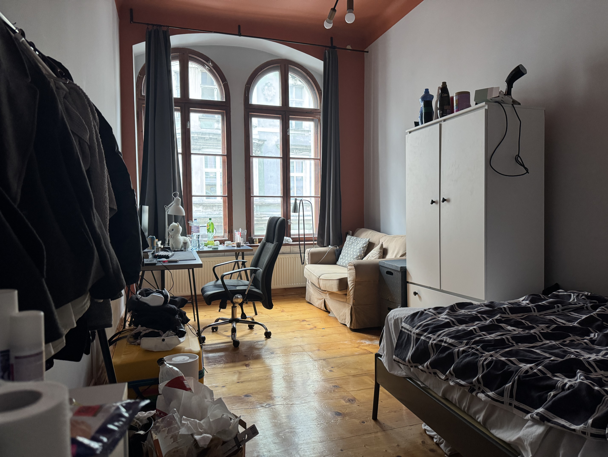
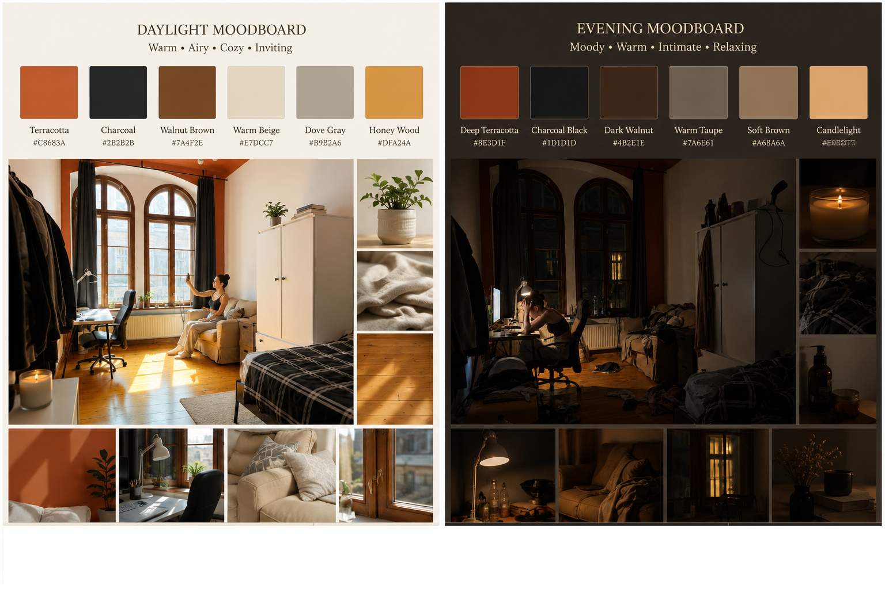
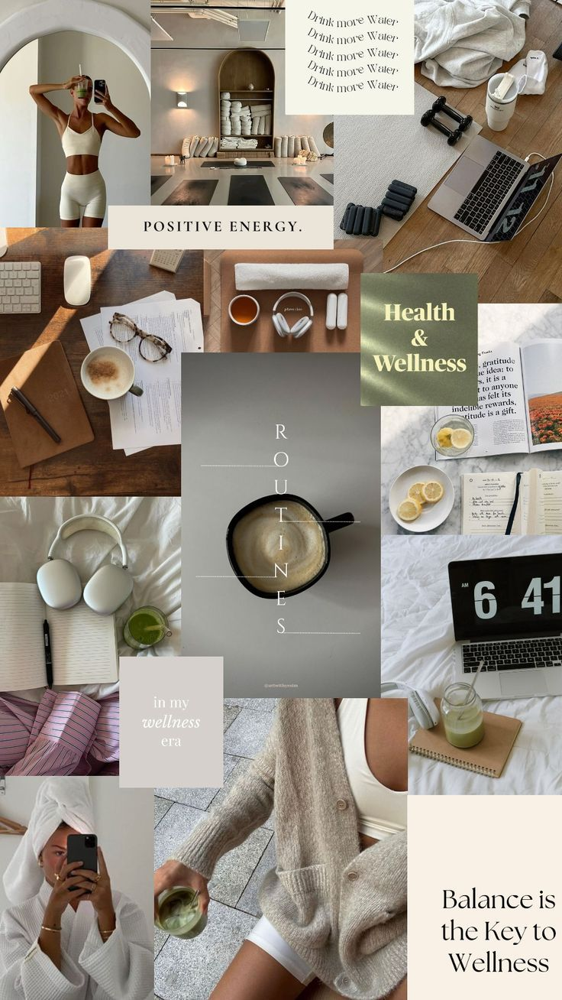

Performing Happiness

The cost of keeping it up.
Performing Happiness
The “It Girl” Aesthetic and Lived Emotional Experience
This Advanced Project explored how the “It Girl” aesthetic shapes expectations around happiness, emotional control, and self-presentation. The final outcome was developed as a two-image photographic project, contrasting a curated online version of happiness with a more private and emotionally exhausted lived reality.

The project focuses on the gap between what is performed for visibility and what exists outside the frame. Rather than presenting social media as simply fake, the work examines how people participate in these performances even when they create pressure, comparison, and emotional fatigue.
The final project consists of two images: Curated Happiness and Lived Emotional Experience. Both images use the same room and the same subject, but the atmosphere, lighting, order, and body language change completely.
Project Overview
This project began with an interest in how happiness is performed online. In “It Girl” content, life is often presented through repeated visual codes such as clean spaces, soft daylight, controlled routines, calm expressions, and carefully arranged domestic settings. These images can look peaceful and inspiring, but they can also create pressure to appear emotionally stable, attractive, productive, and in control.

After feedback and further development, I narrowed the project into a two-image photographic contrast. The first image, Curated Happiness, presents a bright, tidy room where the subject appears relaxed and cheerful while recording herself. The second image, Lived Emotional Experience, shows the same room at night, now messy and emotionally heavier, with the subject sitting at the desk while editing and appearing exhausted.
The project does not simply argue that the online image is fake and the offline image is real. Instead, it explores the emotional gap between these two states and questions why curated happiness continues to be performed even when the process behind it can feel tiring or pressurising.
By using the same room in both images, the project shows that the difference between performed happiness and lived emotional experience is not always about separate worlds. It can exist within the same space, the same body, and the same routine.
Research Question
How does the “It Girl” aesthetic shape the expectations placed on heteronormative young women from puberty to early adulthood, and how does this pressure create a gap between performed online happiness and lived emotional experience? Additionally, why do these young women continue to participate in this emotionally demanding performance, and what social or cultural influences encourage its repetition?

This research question helped me focus the project on the relationship between online performance and emotional reality. The final work uses two images to make this gap visible. The first image represents the controlled, visible performance of happiness. The second image represents the less visible labour, exhaustion, and emotional pressure behind that performance.
The project became less about exposing social media as false and more about showing how emotional performance is repeated. The subject is not only shaped by the aesthetic; she also takes part in maintaining it by recording, editing, and presenting herself in a certain way.
The two images ask the viewer to think about what happens before and after the visible online moment. The first image shows the moment designed to be seen. The second image shows the emotional and physical process that supports it.
Research and Context
This project is informed by research into self-presentation, selfie culture, digital identity, emotional labour, happiness, and online femininity. These theories helped me understand the “It Girl” aesthetic not only as a visual trend, but as a system of social and emotional expectations.

Self-Presentation and Performance
Erving Goffman’s theory of self-presentation was important for understanding social media as a performance space. Goffman explains that people behave differently depending on whether they are in a “front stage” or “back stage” situation. The front stage is where a person presents a controlled version of themselves to others, while the back stage is where the less polished and less visible parts of the self exist.
This theory connects directly to my final images. Curated Happiness acts as the front stage. The subject is visible, composed, and aware of being seen. The clean room, daylight, relaxed pose, and phone camera all contribute to a controlled performance of happiness. Lived Emotional Experience works as the back stage. The same room becomes darker, messier, and emotionally heavier. The subject is no longer performing for the camera, but dealing with the labour behind the image.
This helped me avoid treating the project as a simple contrast between “fake” and “real.” Instead, the two images show different stages of performance: the visible image and the hidden process behind it.
Happiness as a Social Expectation
Sara Ahmed’s writing on happiness helped me think about happiness as something shaped by social and cultural expectations. Happiness is often treated as a personal feeling, but Ahmed’s work shows that happiness can also become something people are expected to pursue, display, and prove.
This is important for the “It Girl” aesthetic because happiness is often shown through visual order. A happy life appears as a clean room, a calm face, a productive routine, and a controlled body. In this project, happiness is not only an emotion. It becomes an image that has to be arranged, recorded, and made believable.
The first image shows this expectation clearly. The subject appears calm and cheerful in a tidy, sunlit space. However, the second image shows that maintaining this image requires work. The emotional pressure does not disappear when the camera turns off. It continues through editing, repetition, and the need to keep producing a desirable version of the self.
Self-Surveillance and Feminine Discipline
Rosalind Gill’s work on media culture and self-surveillance helped me understand how young women are encouraged to monitor and improve themselves. In contemporary visual culture, femininity is often connected to constant self-management: managing appearance, emotions, productivity, health, routines, and lifestyle.

The “It Girl” aesthetic reflects this very clearly. It presents the ideal young woman as organised, calm, attractive, productive, and emotionally balanced. This creates pressure because the subject is not only expected to look good, but also to appear in control of her whole life.
In my project, the tidy room and relaxed selfie are not neutral. They represent a visual performance of discipline and control. The messy night-time image interrupts this ideal by showing exhaustion, disorder, and the labour that the polished image hides.
Aspirational Labour and the Hidden Work of Online Image-Making
Brooke Erin Duffy’s concept of aspirational labour was useful for understanding the hidden work behind online self-presentation. Content that looks natural or effortless often requires planning, staging, editing, and emotional effort. This is especially relevant to influencer culture, where personal identity becomes something that must be continuously produced and maintained.
The “It Girl” aesthetic often appears effortless, but it depends on labour. The room must be arranged, the body must be positioned, the lighting must look soft, and the expression must communicate ease. The final image hides the process that created it.
This idea shaped my final outcome. The first image shows the result of this labour: a clean, happy, socially visible moment. The second image shows the labour behind it: the subject editing at night, surrounded by mess, tiredness, and pressure. The diptych makes the hidden effort visible.
Selfie Culture and Digital Self-Representation
Ana Peraica’s Culture of the Selfie helped me understand selfies as part of a wider history of self-representation. Selfies are not only casual images; they are part of a visual culture where people increasingly understand and present themselves through images.
This connects to my project because the “It Girl” aesthetic depends on repeated self-representation. The body, room, routine, mood, and lifestyle all become visual material. The subject is not only taking a photo or video; she is producing a version of herself that fits an existing aesthetic code.
Crystal Abidin’s research on influencer selfies also helped me understand that online images can involve emotional and gendered labour. Influencer-style images often appear intimate and authentic, but they are also carefully managed. This is useful for my project because the “It Girl” aesthetic often mixes authenticity with performance. It asks the viewer to believe that the image is natural, even when it is highly constructed.
AI, Authenticity, and Constructed Reality
The use of AI-assisted image editing became part of the research context because the project is about constructed identity and performed authenticity. The room, objects, and personal references came from real material, but AI was used to refine and construct the final images. This process reflects the way online images often appear natural while being shaped through editing, selection, correction, and repetition.
This does not weaken the project. Instead, it strengthens the concept. The final images are not presented as untouched documentary photographs. They are staged photographic works that explore how reality can be shaped into a believable image. This connects directly to the project’s question: if online happiness is constructed, why does it still feel socially powerful?
Related Practice
The project is also connected to artists and exhibitions that explore identity, performance, beauty, and digital culture.
Amalia Ulman’s Excellences & Perfections is relevant because it used Instagram to perform a fictional online persona. Her work showed how easily online audiences accept constructed identity as authentic when it uses familiar visual codes. This influenced my project because I am also interested in how a believable online image is created through repetition, pose, setting, and emotional tone.
The Somerset House exhibition Virtual Beauty was useful because it explored how digital culture, artificial intelligence, and social media shape contemporary beauty standards. This helped me think about the final work as an exhibition-based project rather than only a social media critique.
Erica Scourti’s practice is also relevant because her work often deals with digital identity, text, performance, and the mediated self. Her practice helped me think about how personal experience and online identity can be translated into visual and spatial forms.
Cindy Sherman’s work helped me think about femininity as something performed through pose, costume, expression, and setting. Although my project is more directly connected to social media, Sherman’s work is useful because it shows how identity can be constructed through visual codes.
Together, these references helped me position my project within a wider discussion about self-image, digital performance, emotional labour, and the construction of femininity online.
Key References
- Erving Goffman, The Presentation of Self in Everyday Life
- Sara Ahmed, The Promise of Happiness
- Rosalind Gill, writing on postfeminist media culture and self-surveillance
- Brooke Erin Duffy, Not Getting Paid to Do What You Love
- Ana Peraica, Culture of the Selfie: Self-Representation in Contemporary Visual Culture
- Crystal Abidin, research on influencer selfies and online visibility
- Somerset House, Virtual Beauty exhibition
- Amalia Ulman, Excellences & Perfections
- Erica Scourti, digital identity and performance-based practice
- Cindy Sherman, Untitled Film Stills
Visual Research
The visual research focused on the contrast between two emotional states within the same room. I used the same location for both images so that the difference came from lighting, order, body language, and atmosphere rather than from a completely different setting.
In the first image, the room is bright, clean, and controlled. It represents the visual language of performed happiness. In the second image, the same room becomes darker, cluttered, and emotionally heavier. This contrast helped me explore how a space can change meaning depending on how it is arranged and presented.
The room became important because it acted as both a private space and a performance space. In the daytime image, it appears calm and socially presentable. In the night-time image, it becomes a place where hidden work, exhaustion, and emotional pressure become visible.
The contrast is not created through extreme emotion. It is created through smaller visual details: daylight versus desk lamp, clear floor versus clutter, relaxed posture versus collapsed posture, and recording versus editing.

Moodboard Direction
The moodboard was divided into two visual directions: Curated Happiness and Lived Emotional Experience.
The curated side used clean spaces, natural daylight, warm tones, soft domestic details, and relaxed body language. These choices reflected the visual codes of the “It Girl” aesthetic, where happiness appears calm, effortless, and controlled.
The lived emotional side used darker lighting, clutter, night-time atmosphere, and heavier body language. This direction was not intended to show dramatic sadness, but quiet exhaustion and emotional pressure.
The moodboard helped me keep the final images connected. Both sides needed to feel like the same life, not two completely separate worlds. This was important because the project is not about two different people or two unrelated spaces. It is about the same person and the same room shifting between visibility and exhaustion.

Curated Happiness
- daylight
- clean room
- controlled pose
- phone/selfie
- warm floor tones
- calm domestic space
Lived Emotional Experience
- night-time
- desk lamp
- editing screen
- clutter
- tired posture
- emotional heaviness
Project in Practice
The project was developed through a practice-based process using real room references, personal visual references, and AI-assisted image editing. I worked with the same room as the main location because I wanted the contrast to come from atmosphere and emotional state rather than from changing the environment completely.

The first image was constructed as a controlled online moment. The room was made tidy, bright, and calm, while the subject appeared relaxed and happy while recording herself. This image represents the version of the self that is made visible and socially readable.
The second image was constructed as the hidden process behind that performance. The same room was shown at night, messy and emotionally heavier, with the subject sitting at the desk while editing and appearing exhausted. This image represents what remains outside the curated frame.
The final project became a diptych because two images were enough to show the central contrast clearly: the image made for visibility and the emotional reality behind it. Using only two images also made the work more direct. The viewer is forced to compare them immediately rather than follow a long sequence.
The practical process involved refining the room, lighting, body position, and atmosphere until both images felt connected but emotionally opposite. The aim was to create images that looked photographic and believable, while still clearly functioning as staged visual work.
Text
Printed text was used alongside the images. Some text fragments echoed common online phrases connected to self-improvement and lifestyle culture, such as motivational captions or wellness language. These were placed against more uncertain or reflective statements that suggested emotional pressure.
The text was important because social media aesthetics are not only visual. They are also shaped through captions, affirmations, slogans, and repeated phrases. By including text, the exhibition showed how language contributes to emotional performance.
Possible text fragments:
“Looking calm is not the same as feeling calm.”
“The camera turns off, but the pressure stays.”
“Effortless takes effort.”
“The smile is part of the routine.”
“Authenticity can also be performed.”
Exhibition Plan
The final exhibition was designed as a two-image wall-based display. The images were placed side by side as a diptych so that the viewer could directly compare the two emotional states of the same room.
The left image, Curated Happiness, presented the polished online moment: daylight, order, cleanliness, and performed happiness. The right image, Lived Emotional Experience, presented the hidden emotional labour behind that image: night-time, clutter, editing, tiredness, and pressure.
Placing the images together made the contrast immediate. The viewer could see that the online image does not exist separately from the work and exhaustion behind it. The two images depend on each other: the first shows what is presented, while the second shows what is hidden.
The exhibition was kept minimal because the project’s strength comes from comparison. Too many images would make the idea less focused. By using only two final images, the work creates a clear before-and-after structure, while still leaving space for the viewer to think about the emotional complexity behind the contrast.
Wall layout:
AI-Assisted Process
This project used AI-assisted image editing as part of the final production process. The room, objects, spatial layout, and personal visual references were based on real material. The AI process was used to stage, refine, and transform these real references into two final photographic images.
AI was used intentionally because the project is about constructed identity, performed happiness, and the visual systems of social media. The use of AI reflects the artificial and edited nature of online self-presentation, where images often appear natural but are shaped through selection, correction, staging, and repeated adjustment.
The aim was not to replace the personal or real elements of the project, but to use AI as a tool to heighten the contrast between two emotional states: the polished image of happiness and the more exhausted reality behind it.
The final images should therefore be understood as AI-assisted staged photographic works. They are based on a real room, real objects, and personal visual references, but they were digitally constructed and refined to communicate the project’s central idea more clearly.
Note: The final images were produced using AI-assisted image editing, based on real room references, real objects, and personal visual references.
Final Outcome
The final project consists of two photographic images presented as a diptych: Curated Happiness and Lived Emotional Experience. The images show the same room in two different emotional states.
The first image presents a controlled and socially visible version of happiness. The subject sits in a clean, sunlit room and records herself, suggesting ease, confidence, and emotional balance. The second image shows the same environment after the performance has ended. The room is dark, cluttered, and emotionally heavier. The subject sits at the desk editing, with her head in her hands, suggesting tiredness and pressure.
Together, the two images show that performed happiness does not exist separately from emotional labour. The cheerful online image depends on hidden effort, repetition, and editing. By placing the two images together, the project asks viewers to consider what is left outside the frame when happiness is made visible online.
The final outcome is intentionally simple: two images, one space, one subject, and two emotional states. This simplicity allows the central contrast to become clear without over-explaining it.
Visual placement: